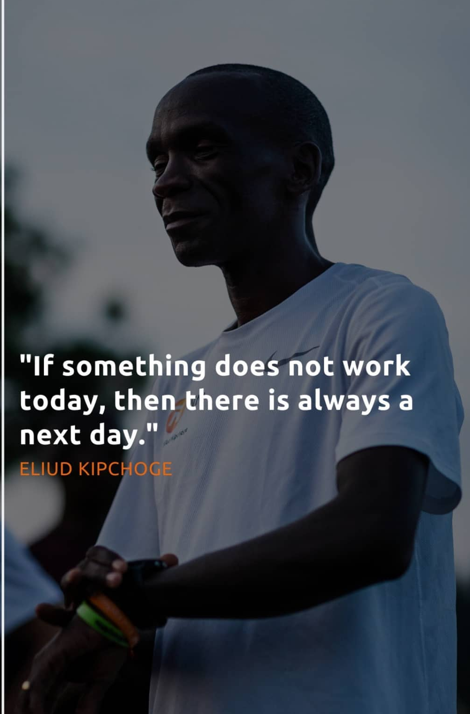

On 22 October my brother messaged me and asked me that he will help me run my first sub 30 min 5K on on my 90th day of this running streak which was on 26 October. And I was like YES LETS DO IT. So I recovered the whole week from 23 October to 25 October. Me and my brother were coming home from college and job respectively for Diwali and I was so excited to achieve this 5K mark, do some long runs together and enjoy this small period of life together.
And I reached Kota(hometown) completely relaxed and recovered on 25th October and then something happened which I never expected I felt some fever that night so I took some medicine and milk and went to sleep. But the morning of my 90th day wasn't like I wanted it to be, the fever was still there. So I decided to shift my plan to 27 october and just did a light run on my 90th of running streak today thus I went for a run but just after 1.2kms my right knee was paining badly. But I forgot that thought and ran 2.2 kms with my bro. After the run my brother did some stretching for me and I was fine, now came the I was waiting for last 7–8 days. It was a cold sunday morning and my body was paining like hell I couldn't even move and inside me I was thinking that I have lost everything my 5k record, my 365 day streak everything. And then after sometime the realization came that I have chicken pox and I said no way and that was it I wasn't able to run from my 91st day and thus my streak endend.
THINGS I HAVE LEARNED FROM THIS SITUATION:
At that time my next aim was to train for my first 10K race on 22nd December in Pune.